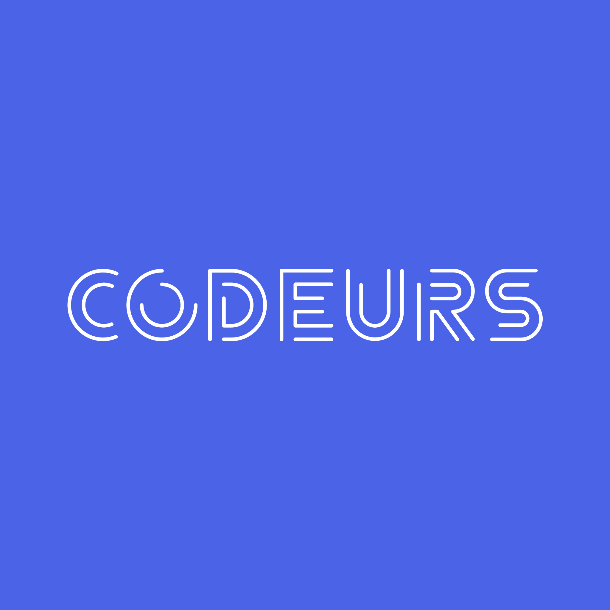
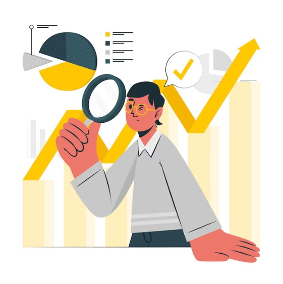
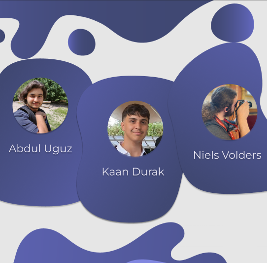
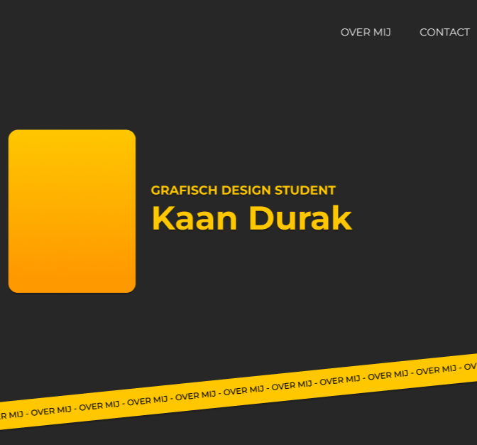

OVER MIJ - OVER MIJ - OVER MIJ - OVER MIJ - OVER MIJ - OVER MIJ - OVER MIJ - OVER MIJ - OVER MIJ - OVER MIJ - OVER MIJ - OVER MIJ - OVER MIJ - OVER MIJ - OVER MIJ - OVER MIJ - OVER MIJ - OVER MIJ - OVER MIJ - OVER MIJ - OVER MIJ - OVER MIJ - OVER MIJ - OVER MIJ - OVER MIJ - OVER MIJ - OVER MIJ - OVER MIJ - OVER MIJ - OVER MIJ - OVER MIJ - OVER MIJ - OVER MIJ
Over mij
Ik ben altijd een creatieve persoon geweest, van het tekenen van willekeurige wezens tot het ontwerpen van designs voor mobiele telefoons. Sinds jongs af aan is tekenen nog steeds één van mijn favoriete hobby's. Mijn creativiteit strekt zich uit tot UI/UX-ontwerp. In mijn studie Digitale Vormgeving heb ik alle tijd om mijn vaardigheden te ontwikkelen en te honen.
Als student in de richting Digitale Vormgeving ben ik meer dan bereid om altijd bij te leren en de ontwerper te worden die ik nooit had gedacht te kunnen zijn!
In deze case hebben mijn team en ik samen de branding en development moeten doen voor de fancy vergaderruimte: Ampère. Van het bedrijf smooth sailing, is Ampère een vergaderhuis in het hartje van Beernem, in een art-deco stijl. Voor deze case hebben we een hele app en website designed, branding zoals een logo, kleuren pallet en brandbook gecreëerd en de website developed.
Deliverables:
Door deze case heb ik geleerd hoe ik op de beste manier in een groep kan werken, hoe er initiatief genomen moet worden en hoe er gemotiveerd moet worden binnen het team. Het was niet altijd even gemakkelijk om te beginnen met onze taken met de lange uren van WPL2 zelf, maar door onze tanden te bijten hebben we iets fenomenaal gecreëerd! Binnen deze case heb ik het meeste gewerkt aan de designs van de logo, brandbook, de UI en UX van de app en wat geholpen met het coderen van de website.
In de POP opdrachten heb ik mijn eigen personal branding gemaakt. Samen met deze personal branding heb ik ook mijn Motivaties, Kwaliteiten en Waarden ontdekt.
Gastcolleges
De gastcolleges die ik de eer had mee te volgen gaven mij een beter idee en beeld van de werkvloer. Dankzij de gastsprekers van Yappa, Monocode en ook Codeurs die heel enthousiast waren hun positie uit te leggen en vragen te beantwoorden.


Analyse van de Arbeidsmarkt
Bij deze opdracht heb ik verschillende vacatures bestudeerd die te maken hebben met mijn opleiding. Zo heb ik een beter inzicht gekregen over wat bedrijven nu juist zoeken en hoe ik mezelf beter kan voorbereiden voor de werkvloer.
Groepswerk
De groepsopdracht die ik samen met mijn team heb moeten maken heeft mij allemaal verschillende dingen bijgeleerd. Zoals bijvoorbeeld het belang van communicatie en goede feedback.


Portfolio
Één van de grotere opdrachten die mij het meeste heeft bijgeleerd. Het maken van deze portfolio was een grote uitdaging en nam heel veel tijd in beslag. Maar dat heeft mij juist geleerd hoe belangrijk tijd management wel is.